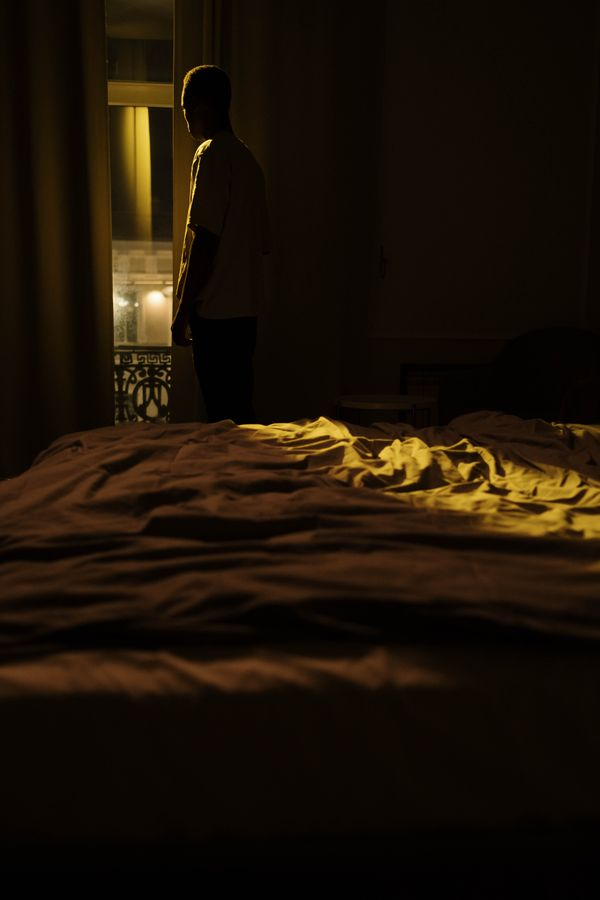

Blackout Curtains for Better Sleep: What Actually Blocks Light

Light is the enemy of melatonin. Even the glow of a streetlamp leaking around your blinds can suppress the hormone that tells your body it’s nighttime — and you don’t have to see the light for it to matter. Closed eyelids still let a surprising amount through.
Blackout curtains are the straightforward fix. But not all of them actually black out, and the difference between a good set and a disappointing one usually comes down to details nobody mentions on the packaging.
The Short Version
- Light disrupts sleep even through closed eyelids: dim light at night is linked to lighter, more fragmented sleep. Darkness is one of the cheapest sleep upgrades there is.
- “Blackout” vs. “room darkening” is a real distinction: true blackout blocks essentially all light; room darkening just dims it. Check what you’re actually buying.
- Light leaks are the #1 complaint: the gaps at the edges — top, sides, bottom — matter more than the fabric. How you hang them beats what they’re made of.
- Measure before you buy: curtains need to be wider and longer than the window to work. Skimpy curtains are just expensive decorations.
- A sleep mask is the budget alternative: when you can’t control the room (travel, rentals, a partner who reads in bed), a good sleep mask does the same job for a fraction of the price.
Why Darkness Matters More Than You Think
Your circadian system reads light as a daytime signal. When light hits your eyes in the evening or during sleep — even dim light — it can blunt melatonin release and shift your body clock later. Shift workers and city dwellers deal with this constantly, and it’s one reason blackout curtains show up in nearly every sleep hygiene guide ever written.
You don’t need a cave. You need “can’t tell whether it’s day or night with your eyes open,” which is a lower bar than most people assume — and higher than most cheap curtains clear.
Blackout vs. Room Darkening: Read the Label
Manufacturers use these terms loosely, but roughly:
- Blackout: blocks ~99–100% of incoming light. The fabric is dense, often with a coated or multi-layer backing.
- Room darkening / dim-out: blocks a large share of light but you’ll still see a glow around the edges and through the fabric on a bright day. Fine for movie nights; not the same thing for sleep.
If the listing doesn’t say “blackout” explicitly, assume it isn’t. And be skeptical of the word alone on bargain listings — density is what does the work.
What to Look For
Dense, heavy fabric. Hold it up to a light in the store (or check reviews mentioning daylight). If you can see the bulb’s shape through it, keep looking. Triple-weave fabrics block light without a separate coating and tend to look better.
A light-colored backing. White or light backing facing the window reflects heat in summer — a real bonus if your bedroom bakes in the afternoon sun.
Width: wider than the window. Curtains should extend several inches past the frame on each side. Light leaking down the sides is the most common failure, and extra width is the fix.
Length: to the sill at minimum, floor is better. Short curtains leak light underneath. Floor-length also looks better, which doesn’t hurt.
Wraparound rods or a pelmet. A standard rod leaves a gap at the top where light pours in. Wraparound (return) rods curve back to the wall, closing that gap. A pelmet or valance across the top does the same job.
Layering. Curtains over existing blinds block far more light than either alone — the blinds handle the center, the curtains handle the edges.
Dealing With Light Leaks
Even good curtains leak at the edges. Fixes that actually work:
- Velcro strips or magnetic seals along the sides, attaching curtain edges to the wall.
- A second, wider panel overlapped in the middle instead of two panels that just meet.
- Top gap: a simple shelf or board mounted above the rod blocks the worst of it.
Renters: tension rods inside the window frame plus a portable blackout shade (the kind that suctions to the glass) can get you 90% of the way with zero holes in the wall.
The Honest Take
Blackout curtains are one of the highest-value sleep purchases you can make — if light is actually a problem in your bedroom. Walk into your bedroom on a sunny afternoon, close the door, and look. If you can read a book, you have a light problem worth fixing. If it’s already dark, spend the money on your mattress or your pillow instead.
Darkness is free. Curtains just help you keep it.